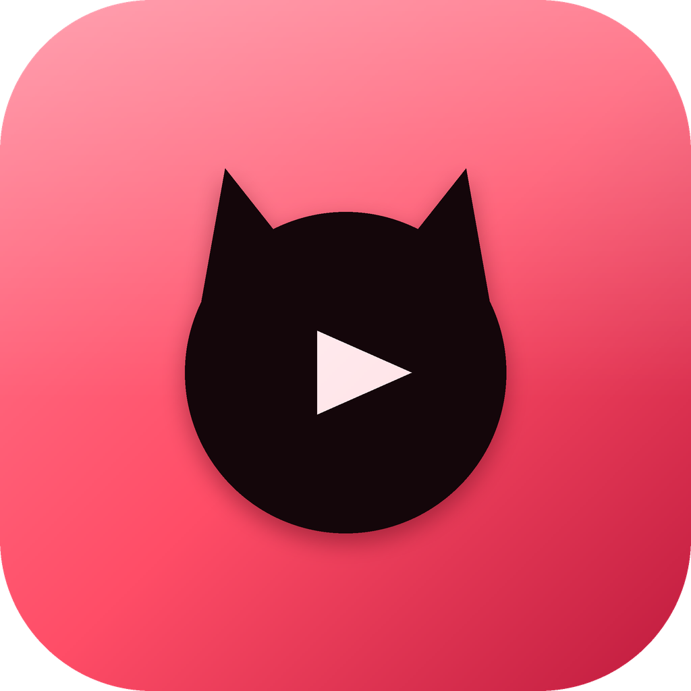
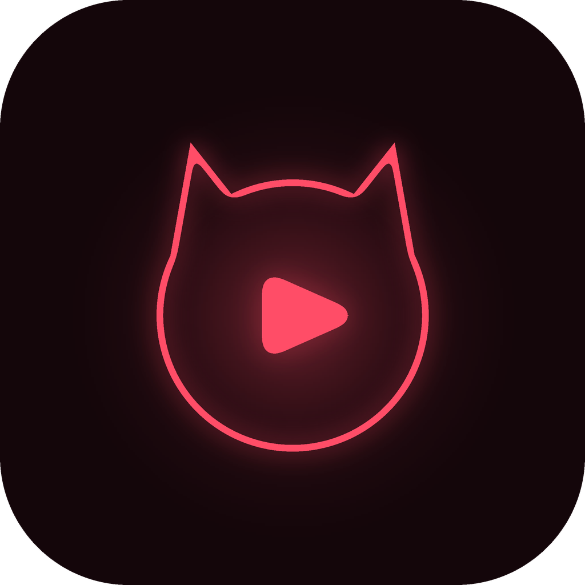
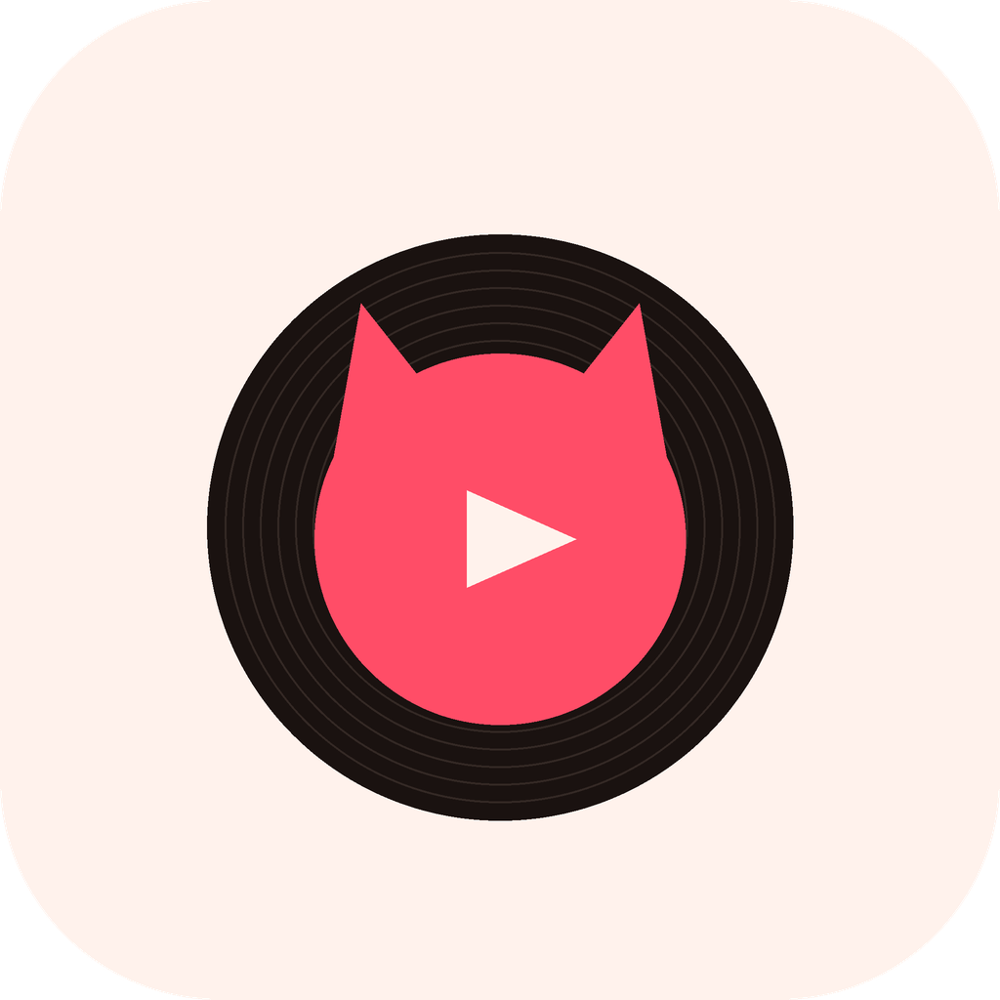
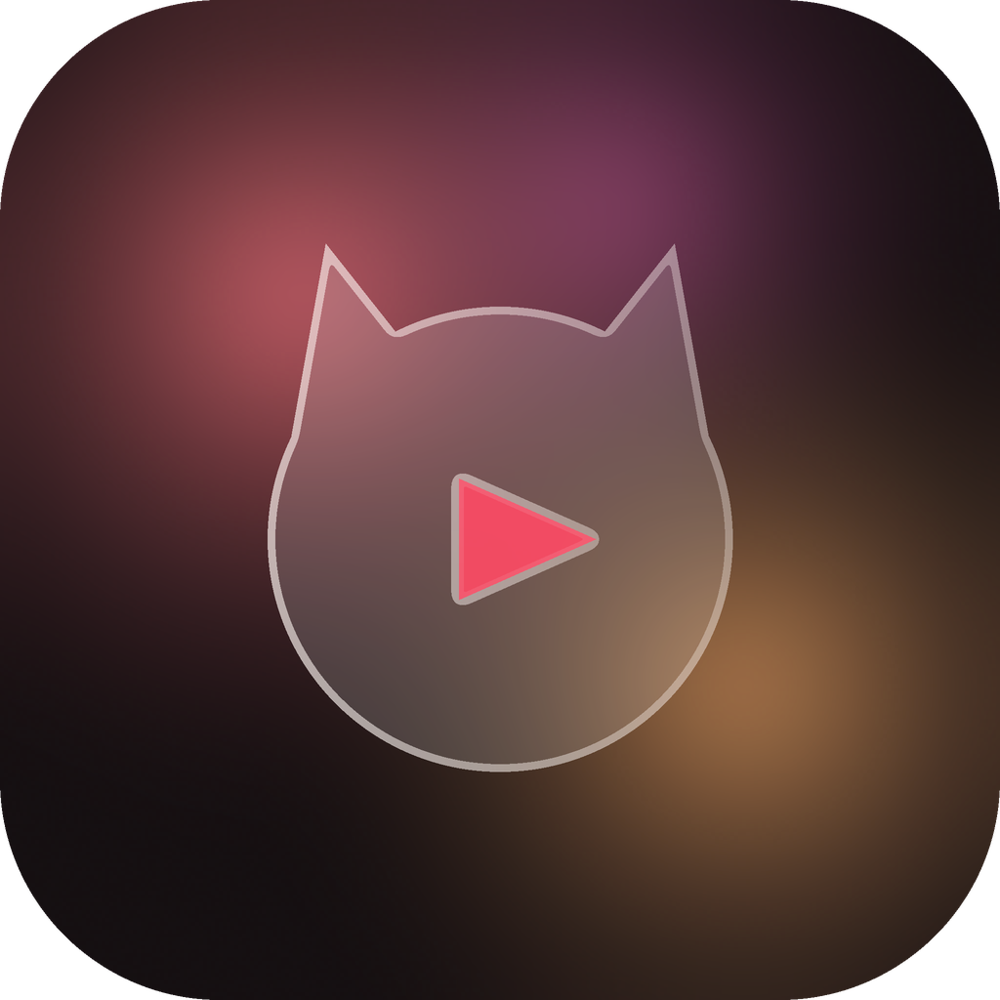
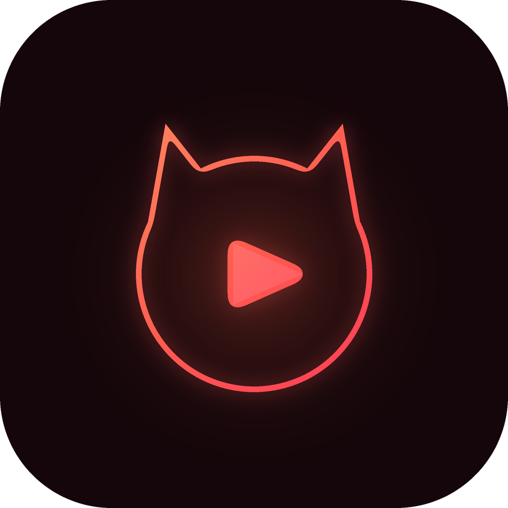

Four directions keeping the coral tile, cat head and play mark. All are 1024×1024 PNGs in this folder.

Closest to the current mark. Cleaner silhouette, light play triangle and a soft depth shadow.

Charcoal tile with a glowing coral outline. Reads well on OLED and in dark home-screen setups.
The lower half of the head becomes an equalizer. The most distinctive / music-forward option.

Cream tile, coral cat and a vinyl record. Warm, collectible, less “streaming app” and more “record store”.
Near-black tile, sculpted coral cat with top rim light and inner shadow. No glow — embossed look.

Soft aurora blobs behind a frosted-glass cat with a bright rim. Premium glassmorphism.
Matte dark tile, coral-to-amber metallic cat with a diagonal sheen. No glow.
Matte dark tile, clay-like coral cat with top highlight and core shadow. Tactile 3D.
Now the live app icon: dark tile + coral outline stroke + coral play. Adaptive icon + monochrome shipped.
Solid coral silhouette with a dark play cutout and a soft halo. Bold and very readable at 48dp.
Cat + play inside a thin glowing ring. Feels like a badge/record label; most “designed”.

Coral→amber gradient outline. Keeps the airy neon look but adds warmth and a stronger edge.
Tip: launchers mask icons to their own shape, so keep the cat inside the central 66% safe zone when adapting one of these to an adaptive icon.